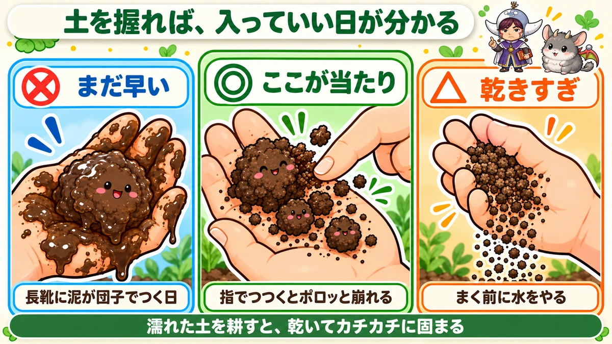
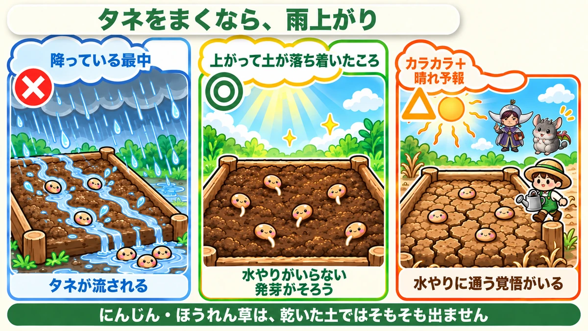
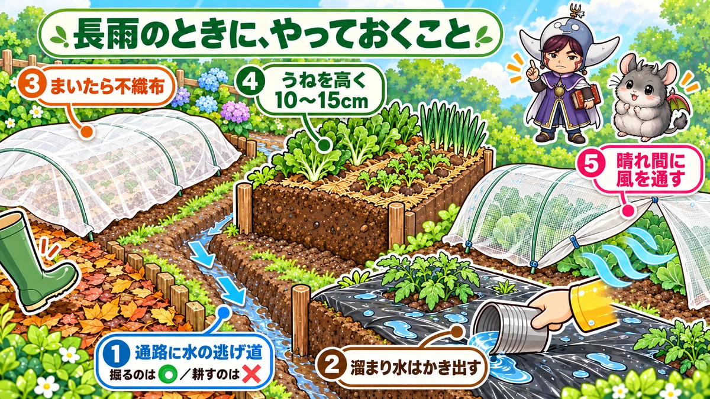

雨の日に畑へ出ていい？🌧️ ダメなのは「土をいじる作業」だけです

🗨️「雨の日って、畑に出たらダメなんですか？」
🗨️「せっかくの休みが雨。今日まいてしまいたいんですけど…」
🗨️「雨のあと、土がカチカチになって芽が出ませんでした」
どうも、8150（えいこう）です🌱 家庭菜園歴8年、理科の教員免許を持っていて、有機・無農薬で野菜を育てています。
今日は雨の話です。
家庭菜園をやっていると、これ、けっこうな確率でぶつかります。とくに秋。秋雨前線が居座って、予報が1週間ずっと雨マーク。でも大根も白菜も、まき時・植え時は待ってくれないんですよね。
先に、この記事でいちばん言いたいことを言っておきます。
★雨でダメになるのは「土をいじる作業」だけです。
まく・植えるは、むしろ雨上がりのほうが有利です。ここを分けて考えられるようになると、雨の予報を見ても慌てなくなりますよ☺️
📖 この記事の目次
まず、作業を2つに分けてください
雨の日にやっていいかどうかは、野菜で決まりません。作業の種類で決まります。
- 土をいじる作業…耕す、うねを立てる、うねの間を耕す、土寄せ、株元を掘る
- 土をいじらない作業…タネをまく、苗を植える、ネットをかける、支柱を立てる、収穫する
このうち、雨に弱いのは上だけです。
なぜかというと、濡れた土を耕したり踏んだりすると、土を「練る」ことになるから。粘土を手でこねている状態を想像してもらうと近いです。こねた粘土は、乾くとカチカチになりますよね。畑でも同じことが起きます。
そして一度固まった土は、その年のあいだ、なかなか元に戻りません。タネをまいても芽が地面を押し上げられず、根も下へ伸びられない。つまり★1日の作業で、そのうね1本を1シーズンぶん台なしにできてしまうんです。
逆に言えば、それ以外の作業は雨が上がってさえいれば、わりと気にしなくていいです。
土を握るだけで分かります

じゃあ「乾いた」の基準はどこか。天気予報とにらめっこしても分かりません。土を見るのが早いです。
やり方は簡単で、うねの土をひとつかみ取って、ぎゅっと握ります。
- 手のひらにべったりついて、開いても団子のまま…まだ早い
- 握ると固まるけど、指でつつくとポロッと崩れる…ここが当たり
- 握っても固まらず、さらさらこぼれる…乾きすぎ。まく前に水をやったほうがいい
真ん中の「ポロッと崩れる」を狙ってください。これ、農業の世界では昔から使われている確かめ方で、道具もいりません。
日数でいうと、★まとまった雨のあと2〜3日が目安です。ただし土質と日当たりで変わるので、最後は握って決めてください。
私はこれを覚えてから、雨のあとに畑へ行っても、まず土を握るようになりました。長靴に泥が団子みたいにくっつく日は、だいたい握っても崩れません。そういう日は、畑の中には入らずに帰ります。
ここを押し切ると、1うね丸ごと無駄になります
いちばん起きやすいのが、この形です。
雨が上がった翌朝に「よし、今しかない」と畑を耕して、その日に大根をまく。土はまだ重たいけれど、週末しか時間が取れないから押し切る。
すると10日たっても、芽がまばらにしか出ません。出た株も途中から育たない。
冬に掘ってみると、原因がはっきり分かります。土が板みたいに固まっていて、根が下へ行けずに横へ曲がっている。二股どころか、ほぼL字です。
★1日待てば防げたことを、3か月後に知る。秋の畑でいちばんもったいないのが、これなんですよね😇
雨上がりは、じつはタネまきの当たり日です

ここからは逆の話です。
「雨＝畑仕事の敵」と思われがちですが、タネまきに限っては、雨のあとはかなり有利です。
理由は、発芽に必要なのが水だから。とくに乾くと芽が出ない野菜があります。
- にんじん…発芽までおよそ2週間かかるうえ、その間ずっと湿っていないといけない。乾いた土にまくと、ほぼ出ません
- ほうれん草…同じく水を切らすと止まる
- 小松菜、かぶ、春菊…短い日数で出るぶん、最初の数日の乾きが致命的
これらを乾いた土にまくと、毎日水やりに通うことになります。仕事をしていると、まあ無理ですよね。
なので私は、秋のタネまきは★しっかり降った雨の翌日、土が落ち着いたころを狙っています。水やりがいりませんし、発芽がそろいます。
まとめると、こうです。
- 降っている最中…✕（土をいじれない。まいても種が流れる）
- 上がって、握ってポロッと崩れる…◎（ここが当たり）
- カラカラで、この先も晴れ予報…△（まけるけど、水やりに通う覚悟がいる）
「雨が降る前にまいておく」は、おすすめしません
よく聞くやり方ですが、私はあまりやりません。
理由は2つあって、まず予報が外れるから。「明日は雨」と言われてまいたのに降らず、結局カラカラで水やりに通う羽目になります。
もうひとつは、まいた直後に強い雨が来ると、種が流されるからです。次で書きますね。
まいたあとに降り続くと、3つのことが起きます
これが雨のいちばん怖いところです。まく前の雨より、★まいたあとの雨のほうが厄介なんですよね。
①タネが流される
まいたばかりのタネは、まだ根を出していないので、土に引っかかっているだけです。強い雨が降ると、そのまま低いほうへ流されます。
一列にまいたはずが、うねの端に固まって芽が出ている。あれです。
②表面がカチカチになって、芽が出られない
濡れて乾いて、濡れて乾いてを繰り返すと、うねの表面だけが薄いせんべいのように固まります。
こうなると、下で芽が動いていても持ち上げられません。掘ってみると、白い芽が地面の裏側で曲がったまま止まっている。あれを見るとせつないです。
見つけたときは、表面をそっと崩してあげてください。私はU字ピン（マルチを留めるコの字の針金）の先で、うねの表面を軽く引っかいています。指でもいいですが、深く掘ると芽を切ってしまうので、あくまで表面だけ。
③水が引かないと、タネも根も腐る
土の中には、水の通り道と空気の通り道があります。ずっと水で満たされていると、空気の側がなくなります。
タネも根も呼吸をしているので、酸素がないと生きていけません。★5日も降り続くと、タネはふやけたまま腐ります。植えたばかりの苗も、根が黒くなって溶けます。
とくに見落としやすいのが、穴あきマルチの穴です。穴に水が溜まったまま何日も置くと、その穴の株だけピンポイントでやられます。
これが怖いのは、★周りの株はぴんぴんしているのに、水が溜まった穴の株だけがやられることです。
見つけたのに「長靴を取りに戻るのが面倒だから、次に来たときでいいか」と置いておく。次に行ったときには、その株だけ根元が黒くなって、指でつまむとスポッと抜けます。
★水をかき出すのに、かかる時間は1分です。
雨の翌日でも、これだけはやっていい

「畑に入るな」と書きましたが、例外があります。★水を抜く作業だけは、濡れているうちにやってください。
放っておくほど被害が広がるので、これは待てません。
- うねとうねの間（通路）に水たまりができていたら、低いほうへ向けて浅い溝を掘る。深さは10cmもあれば十分で、要は水の逃げ道を1本作るイメージです
- マルチの上に水が溜まっていたら、かき出す。手でも空き缶でもいいです。溜まりやすい場所には小さな穴を開けて、うねへ流してしまうのも手です
- 穴あきマルチの穴に水が入っていたら、これも抜く。芽が出ている穴に水が入るぶんには問題ありません
ポイントは、★溝を掘るのはいいけれど、通路を「耕す」のはダメということ。掘るのは水を逃がすため、耕すのは土をほぐすためで、目的が違います。濡れた通路を耕すと、乾いたときに通路のほうが固くなって、余計に水がはけなくなります。
このとき、うねの上にはなるべく乗らないでください。通路だけを歩く。板を1枚置いて、その上に乗って作業すると体重が分散するので、どうしても入らないといけないときはそうしています。
長雨が続くときの、5つの手当て
秋雨や梅雨のように、何日も降り続くときです。順番に書きますね。
- ①予報を見て、素直に待つ…雨マークが続くなら、土いじりは晴れ間まで待ちます。秋は遅れが取り返せない季節ですが、それでも★1〜2日の晴れ間待ちは、遅れのうちに入りません
- ②まいたら不織布をかける…白い薄い布です。雨が直接当たらなくなるので、タネが流れず、表面も固まりにくい。乾燥も防げるので、秋まきでは私はほぼ毎回かけています。本葉が1〜2枚出るまでが目安
- ③うねを高くしておく…水はけの悪い畑では、これがいちばん効きます。うねを10〜15cm高くするだけで、根のあるところが水に浸かりません。にんじんや大根が割れるのも、多くは水はけが原因です
- ④防虫ネットを晴れ間に開けて、風を通す…ネットの中は湿気がこもります。雨が続くと、中でアブラムシが一気に増えることがあるんですよね。晴れ間にネットを開けて空気を入れ、葉についたしずくを払ってやるだけで、ずいぶん違います。このとき泥が葉にはねないよう気をつけてください
- ⑤通路に落ち葉やもみ殻を敷く…歩いても土が固まりにくくなります。しかも敷いたものは、そのまま下から分解されて土に還ります。私は近所の公園で落ち葉をもらってきて、通路に敷いています。大雨のあとでも通路がぐちゃぐちゃにならず、長靴に泥がつきません。これ、地味やけどいちばん楽になった工夫かもしれません
それでも間に合わないときの、最後の2手
雨が止む気配がなく、まき時だけが過ぎていく。そういう年もあります。そのときの逃げ道を2つ。
- ★根菜以外は、セルトレイにまいて家で育てる…白菜・キャベツ・ブロッコリー・レタス・葉物は、セルトレイ（小さい仕切りのある苗づくり用の容器）にまいて、軒下や室内の明るいところで育てられます。雨に左右されずに日数を稼げるので、畑が乾いたころには植えられる苗ができています。大根やにんじんのような根菜は、移植すると又割れするのでこの手は使えません
- ビニールトンネルで雨をよける…うねにトンネルをかけて、上からの雨を防ぎます。裾を開けておかないと蒸れるので、晴れ間には必ず風を通してください
もうひとつ、待ち方の話も。タネ袋に書いてある発芽日数を過ぎても出てこないときは、★待たずにまき直してください。秋は遅れが取り返せないので、「もう少し待てば出るかも」がいちばん損をします。
学ぶ：踏むと、なぜ土が固まるのか🔬
理科の時間です。ここが分かると、「濡れてるときは入らない」が理屈で腹に落ちます。
いい畑の土を虫めがねで見ると、細かい粒がくっついて、小さな塊になっています。この塊を「団粒（だんりゅう）」と呼びます。
大事なのは、塊そのものより★塊と塊のすきまです。このすきまが、水の通り道になり、空気の通り道になります。根はここを通って伸びていきます。ふかふかの土というのは、要するにすきまが多い土のことです。
では、濡れているときに踏むと何が起きるか。
水が潤滑油のはたらきをして、粒同士がつるっとすべります。すべった粒はすきまに入り込み、塊がつぶれて、全体が一枚の粘土に変わります。そして乾くと、そのまま固まる。レンガや瓦を作るときと、まったく同じ工程なんですよね。畑でレンガを焼いているようなものです。
乾いているときに踏んでも、粒は動きにくいので、こうはなりません。「乾いていれば踏んでいい、濡れていたらダメ」の理由はここにあります。
お子さんと一緒なら、これは家で試せます。同じ土を2つ用意して、片方は水でぬらしてからぎゅっと握り、片方は乾いたまま握る。そのまま2〜3日置いて乾かします。
ぬらして握ったほうは、指で押しても崩れない塊になります。乾いたまま握ったほうは、さわるとほろほろ崩れる。同じ土なのに、です。
畑で起きているのは、まさにこれ。目の前で見られるので、なかなか面白いですよ☺️
まとめ
ここまで読んでくださって、ありがとうございます！
雨の日の畑は、判断がつきにくくて迷う場面だと思います。でも見るところは、そんなに多くありません。
- 雨でダメになるのは「土をいじる作業」だけ。まく・植える・ネットをかけるは、上がっていればやっていい
- 判断は土を握るだけ。ポロッと崩れたら当たり、手にべったりつくならまだ早い
- タネまきは、しっかり降った雨の翌日がむしろ狙い目。にんじんやほうれん草は、乾いた土ではそもそも出ない
- 怖いのはまいたあとの雨。種が流れる・表面が固まる・水が引かず腐るの3つ。不織布1枚でだいぶ防げる
- 水を抜く作業だけは、濡れていてもすぐやる。ただし通路を「耕す」のはダメ
- 間に合わないときは、根菜以外をセルトレイで家で育てる。発芽日数を過ぎたら待たずにまき直す
天気は変えられませんが、どの作業を今日やるかは選べます。雨の日は道具を洗ったり、タネ袋を並べて次の段取りを考えたり。私はそういう日、けっこう好きなんですよね。
次の晴れ間に、まず土を握るところから始めてみてください🌧️
なお、9月に何をまく・植えるかは【9月にまく・植える野菜】にまとめています。大根の締め切りやニンニクの植え時が気になる方は、そちらもどうぞ🌱
不織布
まいたあとにかけておくと、雨で種が流れず、表面も固まりません。秋まきでは毎回使っています。
![[商品価格に関しましては、リンクが作成された時点と現時点で情報が変更されている場合がございます。]](https://hbb.afl.rakuten.co.jp/hgb/56bc237a.e97551b1.56bc237b.2513ed10/?me_id=1310260&item_id=10000879&pc=https%3A%2F%2Fthumbnail.image.rakuten.co.jp%2F%400_mall%2Fdiokasei%2Fcabinet%2F007fusyokufu%2F12g%2Fimgrc0092049705.jpg%3F_ex%3D240x240&s=240x240&t=picttext "[商品価格に関しましては、リンクが作成された時点と現時点で情報が変更されている場合がございます。]")

セルトレイ
雨が続いて畑に入れないとき、根菜以外はこれで家で育てられます。日数を稼げます。
![[商品価格に関しましては、リンクが作成された時点と現時点で情報が変更されている場合がございます。]](https://hbb.afl.rakuten.co.jp/hgb/56d221a0.da732c49.56d221a1.b57a6709/?me_id=1230952&item_id=10006155&pc=https%3A%2F%2Fthumbnail.image.rakuten.co.jp%2F%400_mall%2Fnou-nou%2Fcabinet%2Fnousi2%2F0108007400004.jpg%3F_ex%3D240x240&s=240x240&t=picttext "[商品価格に関しましては、リンクが作成された時点と現時点で情報が変更されている場合がございます。]")
トンネル用ビニール
うねにかけて雨をよけます。裾を開けて風を通すのを忘れずに。
![[商品価格に関しましては、リンクが作成された時点と現時点で情報が変更されている場合がございます。]](https://hbb.afl.rakuten.co.jp/hgb/56bc237a.e97551b1.56bc237b.2513ed10/?me_id=1310260&item_id=10001120&pc=https%3A%2F%2Fthumbnail.image.rakuten.co.jp%2F%400_mall%2Fdiokasei%2Fcabinet%2F010maruti-bini-ru%2Fbini-ruopri%2F413190.jpg%3F_ex%3D240x240&s=240x240&t=picttext "[商品価格に関しましては、リンクが作成された時点と現時点で情報が変更されている場合がございます。]")
ジョウロ
逆に乾いているときは水やりが要ります。ハス口が細かいものだと種が流れません。